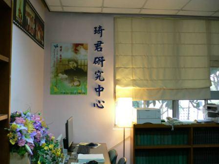

關於我們-研究中心簡介

上世紀七、八○年代，琦君任教於中央大學中文系，從事新文藝的教學。1983年隨夫婿李唐基先生留居美國。仍持續創作不輟，文名享譽海內外。2004年，偕夫返台定居於淡水，同年12月，於中大校園舉辦了「琦君作品研討會暨相關資料展」。此次重返校園的活動，不但連結了琦君與中大間的良誼，也重新啟動了中大新文藝的風潮。
有鑑於琦君累積深厚的文字創作及相關文章，已是台灣重要的文學資產，具有可觀的研究價值，中文系教授李瑞騰乃於2005年成立「琦君研究中心」，旨在整理並研究琦君的文學表現、推動琦君同輩作家之探討、鼓勵現代文學之閱讀與寫作等。並結合中大中文系現代文學教研室，提升中文表達及人文素養，深化其影響。緣此，本中心的研究項目如下：
- 蒐集並整理琦君著作及相關資料。
- 架設琦君文學網站。
- 成立琦君讀書會。
- 舉辦與琦君有關的研討會。
- 編印與琦君有關的圖書。
- 其他有關鼓勵文學閱讀及寫作的活動之舉辦。
- 以琦君研究為基礎，全目進行與琦君同輩女作家之研究，將本中心發展成文學閱讀及寫作的重要場域。